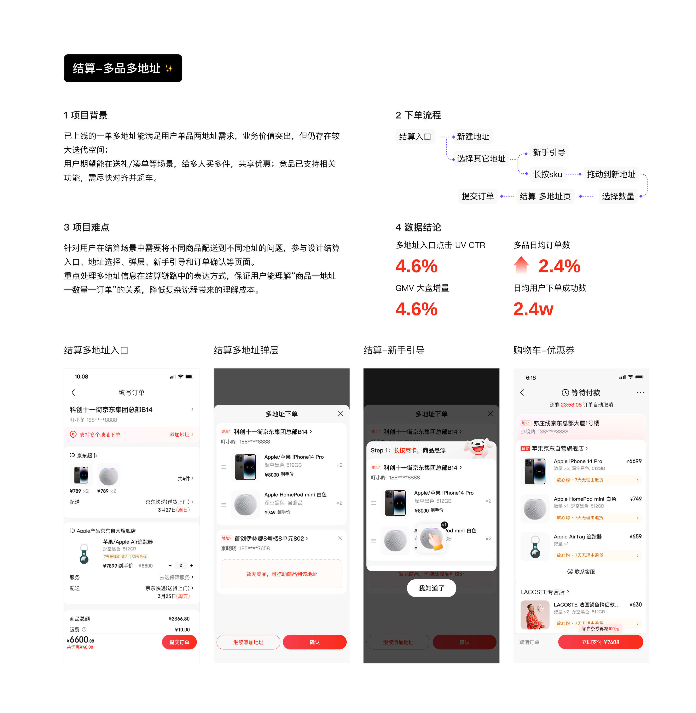
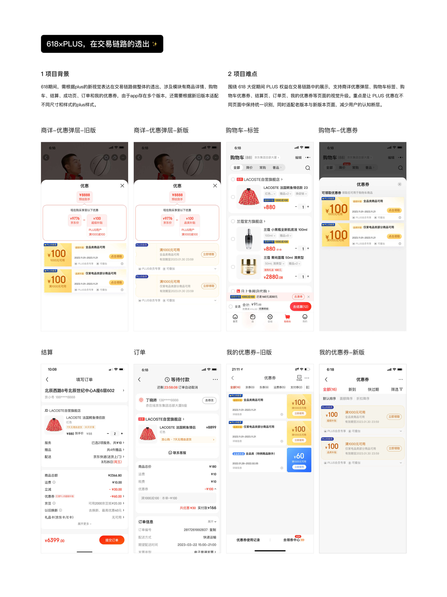
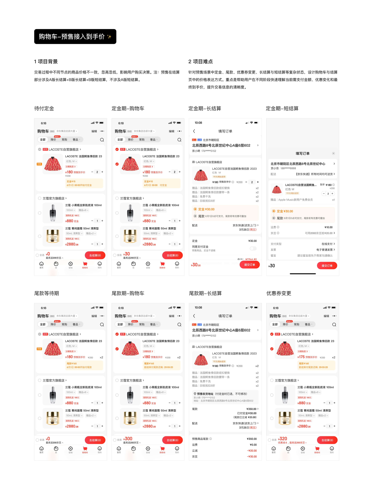

NO.1
项目概览
我的角色：我负责交易链路中跨页面、跨模块需求的视觉设计与体验衔接。相比只负责单一页面的设计支持，我更多参与的是涉及多个节点串联的需求，例如从购物车、商详优惠弹层，到结算页、订单页之间的信息承接与视觉统一。

我的角色：我负责交易链路中跨页面、跨模块需求的视觉设计与体验衔接。相比只负责单一页面的设计支持，我更多参与的是涉及多个节点串联的需求，例如从购物车、商详优惠弹层，到结算页、订单页之间的信息承接与视觉统一。
信息梳理：梳理不同交易节点中的信息层级与视觉表达方式，保证优惠、价格、权益、地址等高密度信息在不同节点中具备一致认知。
样式统一：统一购物车、结算、优惠券、订单等页面的视觉样式，建立更稳定的链路感与页面关系。
多场景设计：设计多状态、多场景下的页面方案，包括弹层、标签、优惠券、引导、价格与权益信息等核心模块。
落地协作：配合产品和交互同学完成方案细化，并推动视觉稿交付落地。



通过这类交易链路项目，多个核心交易页面在视觉表达上形成了更高的一致性，使优惠、价格、权益、地址等高密度信息在不同模块中更容易被识别和理解。
其中，多品多地址项目上线后，对多地址入口点击、订单转化和 GMV 增量均产生正向提升；618 PLUS 与预售到手价相关项目也在大促和预售场景中强化了用户对优惠权益和价格变化的感知。
交易链路设计和营销视觉不同，它更强调信息准确、状态清晰和跨模块一致性。很多时候视觉设计不是单纯做“更好看”，而是在复杂业务规则中找到更清楚的表达方式。
这段经历让我更熟悉了电商核心交易链路的设计方法，也让我意识到：当一个需求涉及多个页面和业务节点时，设计师需要关注的不只是单屏效果，而是用户在整个链路中的连续理解。